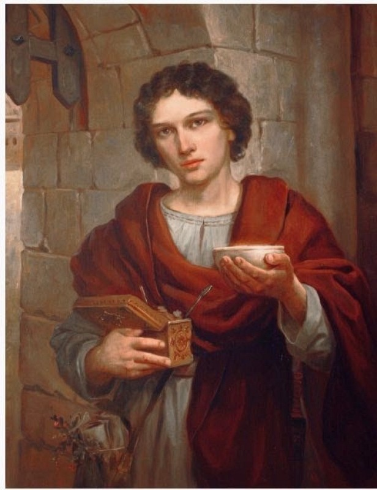

Our Patron Saints
Our church is dedicated to the Resurrection of Christ. These are the saints whose prayers we especially ask, and whose feasts shape our year.
St. Seraphim of Sarov
St. Seraphim is the patron of our skete, and August 1 — the day of his glorification — is our patronal feast. He was a Russian monk of the late eighteenth and early nineteenth centuries who spent long years in the forest near the Sarov monastery in silence and prayer, and then, at the end of his life, opened his door to a stream of visitors who came to him for counsel.
He is remembered above all for his gentleness. He greeted everyone who came to him, in every season, with the Paschal greeting — “My joy, Christ is risen!” For a church dedicated to the Resurrection, no patron could be more fitting.
St. John Maximovitch of Shanghai & San Francisco
Born Michael Maximovitch in 1896 in the province of Kharkov, he was schooled at the Poltava Military School and took a degree in law before leaving Russia after the revolution. As a bishop he served in Shanghai, in Western Europe and finally in San Francisco, and he is one of the great saints of the Russian Church abroad — our own part of the Church, gathered in exile.
Those who knew him described a man who barely slept, who was found at night in the church or at the bedside of the sick, and who was known for finding the one person in a city who had been forgotten by everyone else. See also God is Fire, a piece on his spiritual teaching.

The Holy Great Martyr Panteleimon
Panteleimon was a young physician in Nicomedia at the turn of the fourth century who treated the sick without payment and was martyred under the emperor Maximian. He is one of the unmercenary healers, and the Church turns to him particularly in sickness.
His icon has long held an honoured place in our church, and his feast in the summer is kept each year.
Learning more
If you would like to know more about the Orthodox faith — the feasts, the fasts, the icons, the services — the rector is glad to talk with you, and our readings and homilies page gathers articles from him, including on what Orthodoxy means. Our links page lists other sites we recommend.